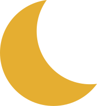
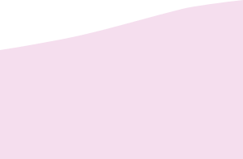
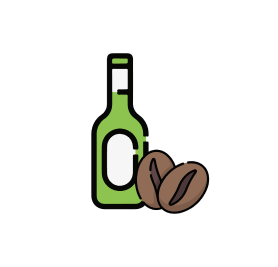

하지불안증
다리에 근질거리는 이상 감각과 초조함이 느껴지고 다리를 움직이고 싶은 충동이
일어나는 질환


불면장애란 잘 수 있는 적절한 시간과 기회가 주어지는데도 불구하고 수면의
시작과 지속, 공고화, 그리고 질에 반복되는 문제가 있어 그 결과 주간 기능의
장애를 유발하는 상태를 일컫는 용어이다.

불면증이란?
불면증의 주요 증상 5가지
현대 사회에서의 불면증 확산
본 저작물의 데이터는 ‘건강보험심사평가원’에서 ‘2024년’ 작성하여 공공누리
제1유형으로 개방한 ‘국민관심질병_성별연령별10세구간별현황_2019_2023(불면증)’
등을 이용하였습니다.
통계는 “성별연령별10세구간별현황”, “성별입원외래별현황”,
“요양기관소재지별현황”파일을 활용하였습니다.
불면증, 사망률 약 8배 증가...
무호흡증
잠자는 동안에 숨쉬기를 멈추는 증상
3개월 이상 반복
불면장애 진단을 위해서는 적어도 3개월 이상 증상이 지속되어야 함
반복해서 깸
잠들기 어렵고 반복해서 깨는 것을 주 증상으로
하는 경우가 흔함
원기 회복X
수면의 시작과 수면의 유지에 문제가 있고, 자고 일어나서 원기 회복이 되지 않음
사망률
8.1배
정상인
불면증 환자
10
81

서울대병원 수면의학센터 정도언, 이유진 교수팀은 1994~2008년 서울대병원을
방문한 수면장애 환자를 분석, 20일 그 결과를 밝혔다.
연구진은 환자 4225명을 대상으로 2013년까지의 통계청 사망자료와 비교
분석했다. 그 결과 불면증 환자(661명)는 수면장애가 없는 정상인(776명)에 비해
심혈관질환 사망률이 8.1배 높은 것으로 나타났다.
연령대별
불면증 환자수
60-69세 연령대에서 가장 많은 환자수
여성 환자가 남성 환자보다 일관되게 더 많음
경기도, 서울에서 가장 많은 환자
성별
불면증 환자수
지역별
불면증 환자수

70~79세
80세 이상
60~69세
50~59세
40~49세
30~39세
20~29세
10~19세
0~9세


2019년
249천
386천
2020년
260천
400천
2021년
267천
420천
2022년
282천
442천
2023년
296천
454천
경기
부산
인천
경북
전남
광주
제주
강원
울산
충남
경남
충북
대전
전북
대구
서울
189천
60천
40천
36천
30천
48천
24천
23천
22천
22천
20천
9천
3...
17천
13천
43천
165천
불면증의 주요 원인
불면장애는 흔히 여러 요인으로 인해 발생하기 때문에 불면증을 겪는 개인에서
원인을 정의하는 것은
쉽지 않다. 일반적으로 일시적으로 겪는 불면증의 흔한 원인은 환경적인 요인
등이 있으며 이 경우는 처음의 유발 사건이 사라지면 대부분 며칠이 이내에
증상이 호전된다.


기분이 우울하거나 불안한 심리적인 문제도 불면증에 영향을 준다.
각성제, 스테로이드제, 항우울제 등의 약물이나 카페인이 많이 함유된 커피나
지나친 음주
만성적인 신체질환이 있는 경우
통증, 관절염, 두통, 호흡곤란 등의 증상이 불면증과 동반될 수 있다.
여행으로 인한 시차, 소음 등의 환경적인 요인도 불면증에
영향을 준다.
새로운 직장, 이사 등으로
규칙적인 생활리듬이 바뀌는 경우 불면증에 영향을 준다.
정신적 질환
카페인 · 음주 · 약물
신체적 질환
환경적 요인
생활습관

한의학적 해결방안
침 치료
-
침 치 료는 몸의 에너지 흐름을 조절하고 긴장을 완화시키는데 효과적입니다.
-
침을 통해 측정 경혈을 자극하면 신경계를 안정시켜주고 스트레스를 완화하는
데 도움이 됩니다.
-
한약은 개인별 체질과 증상에 맞춰 처방합니다. 스트레스를 완화하고
수면의 질을
개선하는 한약재를 사용하여 몸의 균형을
회복시키는 것이 목표입니다.
-
체력을 보강하고 스트레스를 줄여주며, 수면을 촉진하는 효과가 있습니다.
-
추나요법은 척추와 관절의 정렬을 바로잡고 신경계의 기능을 개선하는 데
도움을 줍니다.
-
불균형한 몸 상태는 수면에 악영향을 미칠 수 있기 때문에, 이를 바로잡는
것이 중요합니다.
-
추나 치료를 통해 척추의 정렬을 교정하면 몸의 긴장이 풀리고 통증이 줄어
수면의 질이 향상됩니다.
한약 치료
추나 치료
꿀잠 유도 음식
바나나
상추
레몬밤 차
캐모마일 차
양파
체리
수면 호르몬을
도와주는 비타민 B6 함유
락투카리움의 신경 안정
성분이 수면을 유도
불안, 스트레스 완화,
숙면에 도움이 되는 차
심신 안정, 혈액 순환,
수면 촉진에 도움이 되는 차
매운 성분이 혈액순환을
도와 숙면에 도움
수면 호르몬 멜라토닌이
풍부한 천연 수면 보조제


혹시 나도 불면증...?


혹시 자?
나도 그런데
우리 혹시 불면증인가?
너 집중력이 떨어지고 예민해져?
눈 뜨면 다시 자기 어렵지않아?
그래서 낮 동안 엄청 피곤하지..
아니 잠이 안 와...
우리 불면증인가봐..
헐, 그런가?
어, 맞아!
맞아 맞아!
그리고 잠을 자다가 중간에 자주 깨
자고 싶어도 쉽게 잠들지를 못 해ㅜ
오전 3:00
오전 3:01
오전 3:01
오전 3:02
오전 3:03
오전 3:03
오전 3:00
오전 3:04
오전 3:01
오전 3:02
오전 3:03
오전 3:02
오전 3:03


집중력이 떨어지고 예민해진다
잠을 자다가 중간에 자주 깬다
눈을 뜨면 다시 잠들기가 어렵다
수면 부족으로 낮 동안 피곤한 경우가 많다
잠을 자고 싶어도 쉽게 잠들지 못한다
Check List 01
Check List 02
Check List 03
Check List 04
Check List 05
0개 ~ 1개
불면증과 거리가 멀어요
불면증에 접어들고 있어요
2개 ~ 3개
불면증에 시달리고 있어요
4개 ~ 5개
해결방안
수면 환경 최적화
수면 공간을 편안하게 만드는 것이 중요합니다.
빛과 소음을 줄이는 환경은 수면의 질을 크게
향상시킬 수 있습니다.
수면 위생 개선
일정한 수면 시간을 지키고, 취침 전 과식을
피하며, 편안한 매트리스와 베개를 사용하는 것이 중요합니다. 연구에서는 이러한
수면 위생을 지키는 것이 불면증 증상을 감소시키는 것과
관련이 있다고 보고하고 있습니다.
알코올 및 카페인 제한
알코올과 카페인은 특히 저녁 시간대에 피하는 것이 좋ㅂ습니다. 알코올은
처음에는 진정 효과가 있지만, 수면 주기를 방해하고 중간에 깨어날 수 있습니다.


이완 기법
명상, 심호흡, 따뜻한 목욕 등은 몸과 마음을
이완시키는데 효과적입니다. 연구에 따르면
이러한 기법이 수면 잠복 시간(잠들기까지의
시간)을 줄이고, 수면의 질을 개선하는 데
도움이 된다고 합니다.

규칙적인 운동
규칙적인 신체 활동은 불면증을 개선하는 데 매우 효과적입니다. 연구에 따르면
운동이 불면증 증상을 완화하고, 깊고 회복적인 수면을 촉진하는 데 도움을
준다고 합니다. 다만, 운동은 취침 전에는 피하는 것이 좋습니다.

식이 보충제
마그네슘, 글리신, 라벤더와 같은 보충제가 수면을 개선하는 데 도움이 될 수
있습니다. 이러한 보충제는 수면 개시 시간을 줄이고 수면의 질을 향상
시킬 수 있습니다.